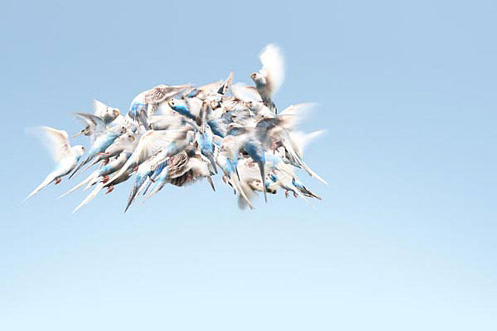

exhibition archive |
||
UNCAGED
|
The Wild Project is pleased to present a series of photographs by Marisol Villanueva, entitled UNCAGED: The Unnatural History of Cage Birds. The artist discusses this body of work as follows: “Since the mid 1990’s, my work has been dedicated to photographing indigenous people, their threatened ways of living and their endangered habitats – on self-assigned projects and in collaboration with the Smithsonian Institution. The opportunity of traveling to remote pristine places where nature has been untouched for millennia has awakened my relationship to the phenomenon of the beauty of spirit in nature. For the past ten years I have lived and worked in New York City, where opportunities of experiencing nature in its full splendor are somewhat rare, but can be found. In 1997 I began bird watching in Central Park. As an artist, the observation of wild birds has opened my eyes to see what we tend to overlook, and to hear that to which we are often deafened. Through my experiences, both as an avid birder and through photographing caged birds in an intimate interior setting, I am privileged to witness and capture their free spirit in the world we live in. It is a time of turmoil for our natural environment, but also a time of unimaginable opportunity to care for our world in new creative ways. With UNCAGED: The Unnatural History of Cage Birds I hope to create a connection between the original wildness of birds and the sense of freedom they evoke within those who view them.” Marisol is a photographer based in New York City. Her work has been exhibited in the Smithsonian National Museum of the American Indian and throughout the United States. A catalogue of the exhibition is available. |
|
exhibition archive |
|||
| 2016 | 2015 | 2014 | 2013 |
| 2011 | 2010 | 2009 | 2008 |